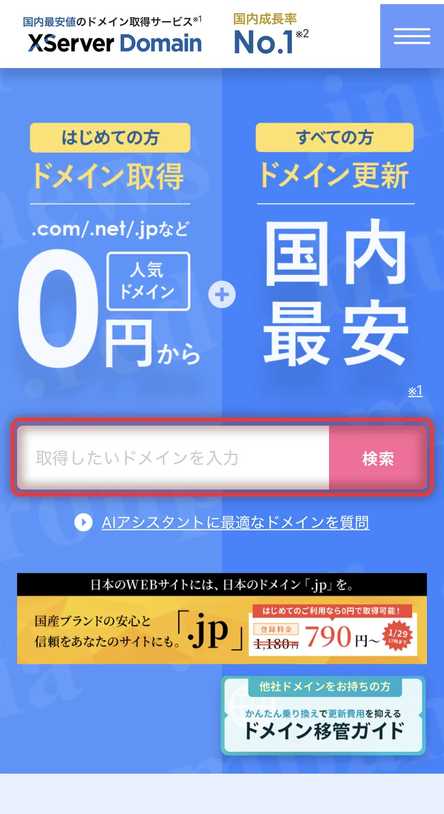

YU DESIGN ／ はじめにやっていただくこと
ホームページ公開までの
3ステップ
お客様にやっていただく作業は3つだけ。全部で約30分です。
わからないところがあれば、いつでもLINEでご相談ください。
全体の流れ
- STEP 1 ドメインを買う ホームページの「住所」を用意します 約15分
- STEP 2 Cloudflareに登録する ホームページを置く「場所」を用意します 約10分
- STEP 3 文字を貼り付ける 「住所」と「場所」をつなぎます 約5分
むずかしい設定は、すべてYU DESIGNが行います。
ご用意いただくもの
- スマホまたはパソコンパソコンのほうが作業しやすいです
- メールアドレスふだん確認できるもの
- クレジットカードドメイン代のお支払い用
- ドメイン名YU DESIGNからLINEでお伝えします
大切なお願い
パスワードは、
誰にも送らないでください。
YU DESIGNにも送る必要はありません。
スクリーンショットを送る前に、パスワードが写っていないかご確認ください。
進め方
- 11つのSTEPを終える
- 2画面のスクリーンショットをLINEで送る
- 3YU DESIGNが確認して、次のSTEPをご案内します
STEP1
ドメインを買う
約15分
ドメイン（ホームページの「住所」のこと。例：〇〇.com）は「Xserverドメイン」で買います。画面はすべて日本語です。アカウント作成は無料で、かかるのはドメイン代だけです。はじめて使う方は、1年目のドメイン代が0円になることもあります。
-

-
YU DESIGNからお伝えしたドメイン名を入力して、「検索」を押します。
「.com」まで含めて、お伝えした文字をそのまま入力してください。

-
画面の上に出てくる「ドメインのみ申込」を選びます。
「サーバーとセットで申込」は選ばないでください。サーバーはYU DESIGNが無料で用意します。

-
下にスクロールして、お伝えしたドメインの「取得可能です」にチェックを入れ、「取得手続きに進む」を押します。
ドメイン名が、お伝えしたものと1文字も違わないか確認してください。

-
「申し込み内容の確認」で、ドメイン名と契約年数「1年」を確認します。
はじめての方は「お支払合計 0円」と表示されることがあります。

-
下にスクロールして、「クレジットカード登録なしで申し込む」にはチェックを入れずに、「取得手続きに進む」を押します。
カードを登録すると1年目の割引が受けられ、2年目からの自動更新もできるようになります。

-
XServerアカウントを作ります。「初めての方」の「XServerアカウントの登録へ」を押します。
以前にXserverを使ったことがある方は、ログインして進めてください。

-
メールアドレスとパスワードを入力し、契約者種別は「個人」を選びます。
パスワードは半角8文字以上です。忘れないようにメモして、大切に保管してください。YU DESIGNにも送らないでください。

-
続けて、ご自身の情報を上から順に入力します。
- お名前（漢字・カナ・ローマ字）
- 郵便番号（「郵便番号から住所入力」を押すと、住所が自動で入ります）
- 都道府県・市区町村・丁目番地・建物名
- 住所（ローマ字）
- 電話番号
「必須」と書かれた欄はすべて入力してください。FAX番号は空欄で大丈夫です。
-
「WHOIS代理公開サービス」はチェックを入れたままにし、「利用規約と個人情報の取り扱い」にチェックを入れて、「確認画面へ進む」を押します。
WHOIS代理公開は、ドメインの持ち主として、お名前や住所がインターネット上に公開されないようにするためのものです。

-
登録したメールアドレスに「確認コード」が届きます。その数字を入力して、「確認画面へ進む」を押します。
メールが見当たらないときは、迷惑メールのフォルダも確認してください。

-
入力した内容を確認して「SMS認証・電話認証をする」を押し、ご自身の携帯電話番号を入れて「認証コードを受信する」を押します。
本人確認のための手続きです。受信方法は「テキストメッセージ（SMS）」のままで大丈夫です。

-
携帯電話にSMSで届いた数字（認証コード）を入力して、「認証する」を押します。
このコードは誰にも教えないでください。YU DESIGNにも送らないでください。
-
「認証が完了いたしました。」と出たら、「お支払い方法を選択する」を押します。

-
「お申込み内容」で、ドメイン名と「1年」を確認します。
はじめての方は、1年目が0円になることがあります。0円でも、本人確認のためにクレジットカードの登録が必要です。

-
ここが重要です
クレジットカードの番号・有効期限・セキュリティコードを入力して、「お申込み内容の確認」を押します。
カードで払うと、2年目からの自動更新も自動でオンになります。ドメインは毎年更新が必要で、更新が止まるとホームページが見られなくなるため、必ずカードで登録してください。

-
最後の確認画面で内容を確かめ、利用規約に同意するチェックを入れて「申し込む」を押します。
申し込みが終わると、Xserverから完了のメールが届きます。
LINEで送るもの
申し込み完了の画面のスクリーンショット
STEP2
Cloudflareに登録する
約10分
Cloudflare（クラウドフレア）は、ホームページを無料で公開できるサービスです。入力するのはメールアドレスとパスワードだけで、住所やカードの入力はありません。
-
Cloudflareの登録ページを開きます。
Cloudflareの登録ページを開く -
「Email」にメールアドレス、「Password」にパスワードを入力し、「私はロボットではありません」にチェックを入れて「Sign up」を押します。
この画面は英語ですが、そのまま進めて大丈夫です。パスワードは次の4つをすべて満たすと、下に緑のチェックが付きます。
- 8文字以上
- 数字を1つ以上入れる
- 記号を1つ以上入れる（$ ! @ % & など）
- 最初と最後にスペース（空白）を入れない
パスワードはXserverとは別のものにして、メモして大切に保管してください。

-
この画面が出たら、登録は完了です。
Cloudflareから確認のメールが届いた場合は、メールの中にあるリンクを押してください。

-
画面が英語のときは、右上のメニューから「日本語」に切り替えます。
画面の画像（準備中） -
「メンバー」の画面を開きます。
画面の画像（準備中） -
YU DESIGNからLINEでお伝えしたメールアドレスを入力します。
画面の画像（準備中） -
権限は「管理者（Administrator）」を選びます。
「権限」とは、YU DESIGNが操作できる範囲のことです。
画面の画像（準備中） -
「招待を送信」を押します。
画面の画像（準備中）
LINEで送るもの
メンバー一覧の画面のスクリーンショット
YU DESIGNが招待を受けて準備ができたら、STEP 3で使う文字をLINEでお送りします。
STEP3
2つの文字を貼り付ける
約5分
YU DESIGNからLINEで届く2つの文字（ネームサーバー＝「住所」と「場所」をつなぐための設定）を、コピーして貼り付けるだけです。
-
XServerアカウントにログインします。
画面の画像（準備中） -
買ったドメインの「ネームサーバー設定」を開きます。
画面の画像（準備中） -
「その他のネームサーバーを使用」を選びます。
画面の画像（準備中） -
ネームサーバー1と2に、LINEで届いた文字をそれぞれ貼り付けます。
例
ネームサーバー1xxxx.ns.cloudflare.com
ネームサーバー2yyyy.ns.cloudflare.com
- 3以降は空欄のままで大丈夫です
- 文字の前後に、スペースが入らないようご注意ください
画面の画像（準備中） -
「確認画面へ進む」→「設定を変更する」を押します。
画面の画像（準備中）
LINEで送るもの
設定完了の画面のスクリーンショット
お客様の作業は、これで終わりです。
反映には数時間〜最大1日ほどかかります。
公開できたら、LINEでご連絡します。
よくある質問
途中でわからなくなったら？
その画面のスクリーンショットをLINEで送ってください。次に押す場所をご案内します。
ドメイン代はいくら？
申し込み画面に表示される金額をご確認ください。はじめての方は1年目が0円になることもあり、2年目以降は年1回の更新費用（.comで年1,750円ほど）が、登録したカードから自動でお支払いになります。
アカウントやドメインは誰のもの？
すべてお客様ご自身のものです。YU DESIGNは公開作業のために一時的に招待していただくだけで、納品後にメンバーから外れます。
パスワードを忘れたら？
各サービスのログイン画面にある「パスワードをお忘れの方」から再設定できます。YU DESIGNではパスワードをお預かりしていないため、代わりに確認することはできません。
わからないことがあれば、
いつでもお気軽にどうぞ。